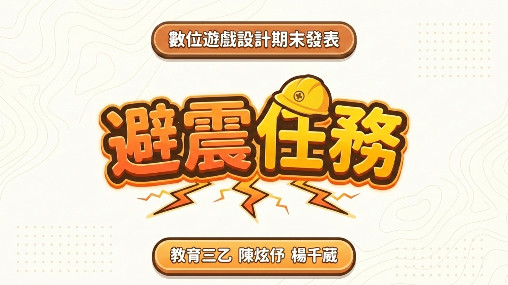
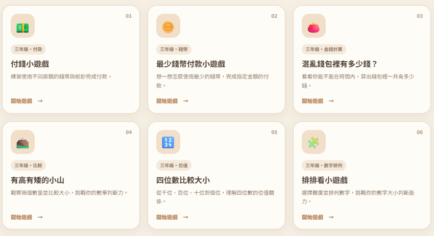
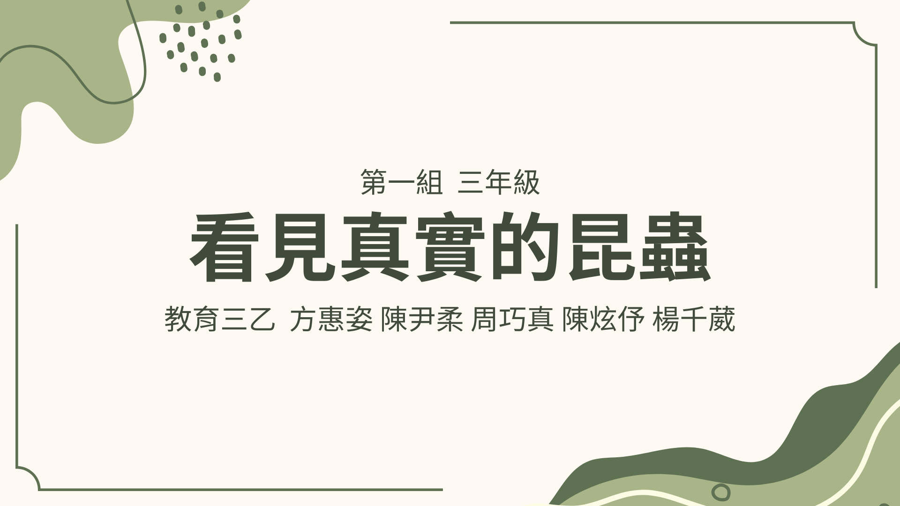
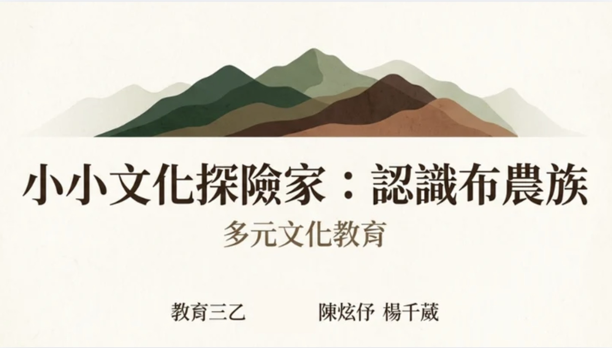
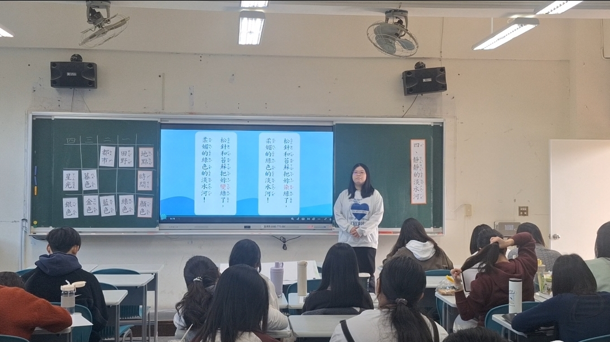
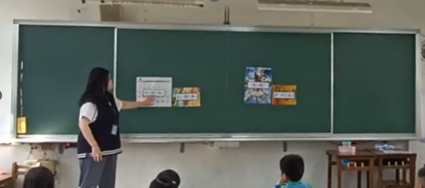
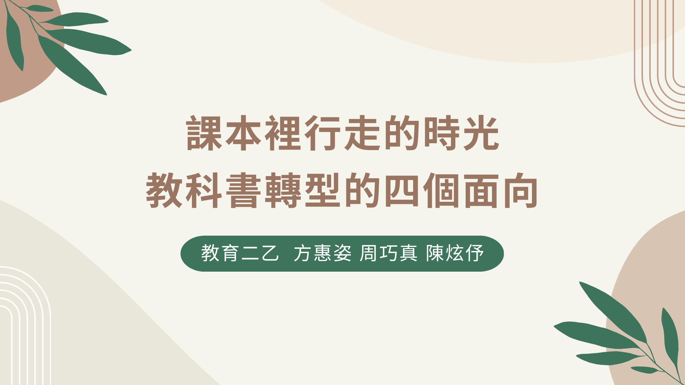

01
數位學習媒材研發
將教育內容轉化為遊戲流程、操作任務與互動情境，並累積 Construct 3 與網頁實作經驗。
我是陳炫伃，臺北市立大學教育學系學生。以教育學為基礎，逐步將課程與教學知識延伸至數位遊戲、互動媒材與教育研究，累積從課程理解、教學設計到數位實作的經驗。
目前主要累積數位遊戲與網頁開發、課程與教學設計、教育研究與資料分析三方面能力。未來希望進一步深化學習與媒材設計、數位學習及研究方法，讓媒材設計能建立在學習需求與研究證據之上。
將教育內容轉化為遊戲流程、操作任務與互動情境，並累積 Construct 3 與網頁實作經驗。
從概念轉化、活動規劃到真實試教，持續從學習者角度檢視課程、媒材與教學語言。
透過文獻整理、文本比較與教師訪談，練習將教育興趣轉化為可系統探究的研究問題。

針對國小低中年級防災學習，將教育內容轉化為連貫闖關單元，包含第一人稱對話、倒數計時牌卡與避震包揀選等互動機制。
第一次完整經歷從教育主題分析、遊戲流程規劃到程式實作，也開始理解數位教材不是單純把知識放進遊戲，而是思考學生需要做出什麼判斷與操作。完成作品後，也進一步思考遊戲效果與知識學習之間的平衡。

將六款國小數學互動遊戲整合至同一入口，涵蓋錢幣付款、錢幣計算、大小比較、位值與數字排列。
依數學概念安排不同互動：付款採操作選擇、位值比較呈現逐位判斷、數字排列則透過卡牌操作。從單一作品進一步思考系列內容的分類、入口、介面與使用經驗。

嘗試將「擬像與超真實」與「文化工業」等社會學理論，轉化為國小三年級可觀察與討論的媒體識讀活動。
透過真實昆蟲觀察、無聲／有聲影片比較、學習單與資料搜尋，思考不同媒材在學習歷程中的功能，而不只是追求形式多樣。




從教學內容、教學形式、課文內容與性別議題四個面向比較不同年代國語科教科書，並加入第一線國小教師訪談。
從教科書的使用者走向分析者，嘗試結合文本比較與教師訪談兩種資料來源理解課程與教材的轉變，也累積從不同證據整理教育議題的經驗。
以完整學術論文規格撰寫緒論、文獻探討與研究方法，並針對國小現職教師設計質性訪談題綱，探討教師詮釋課綱、教學實踐、所遇困難與因應方式。
這段研究歷程讓我逐漸學會把原本的教育興趣轉化為可以系統性探究的研究問題，也讓我理解課程與媒材設計不能只從設計者角度出發，而需要理解教師與學習者的實際需求。